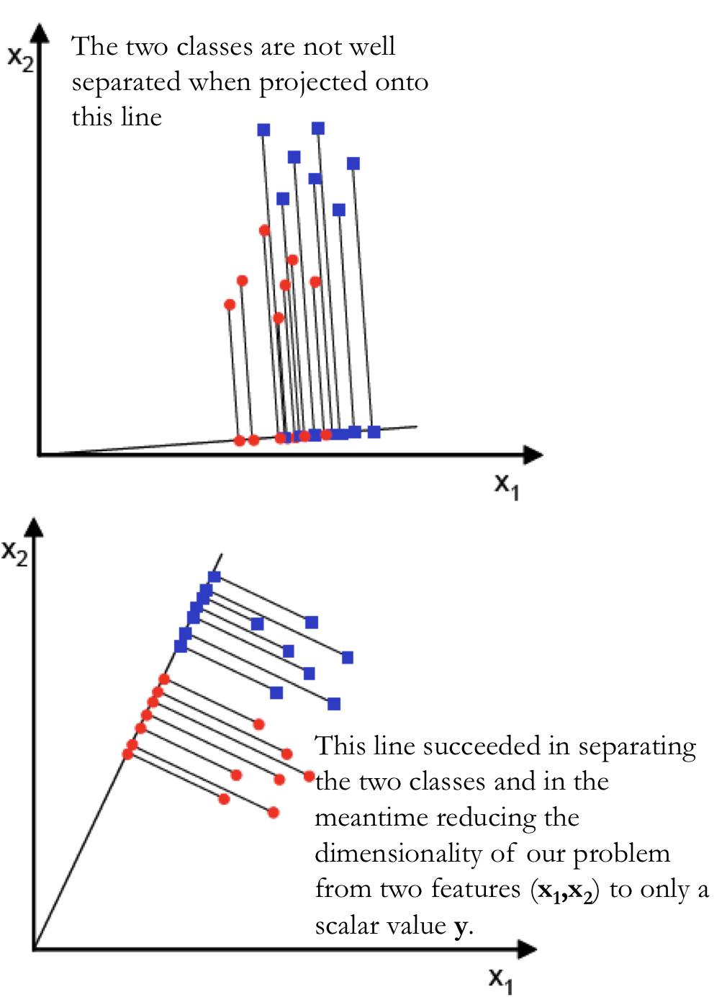
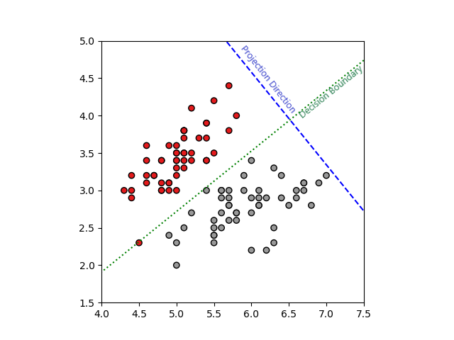

Brief Introduction to Generative Models
To talk about generative models (v.s. discriminative models), we can first learn from this story:
A father has two kids, Kid A and Kid B. Kid A has a special character whereas he can learn everything in depth. Kid B have a special character whereas he can only learn the differences between what he saw.
One fine day, The father takes two of his kids (Kid A and Kid B) to a zoo. This zoo is a very small one and has only two kinds of animals say a lion and an elephant. After they came out of the zoo, the father showed them an animal and asked both of them “is this animal a lion or an elephant?”
The Kid A, the kid suddenly draw the image of lion and elephant in a piece of paper based on what he saw inside the zoo. He compared both the images with the animal standing before and answered based on the closest match of image & animal, he answered: “The animal is Lion”.
The Kid B knows only the differences, based on different properties learned, he answered: “The animal is a Lion”.
– Generative VS Discriminative Models, Mediun
In Math
Discriminative model
- Learn $p(y|x)$;
- or learn $h_\theta(x) = ?$ directly
- at prediction time, $\hat y = arg \max\limits_y p(y|x)$
Generative model
- Learn $p(x, y)$
- by learning $p(x|y)$ and $p(y)$ and use Bayes rule to flip the probability
- at prediction time, $\hat y = arg \max\limits_y p(x, y) = arg \max\limits_y \frac{p(x|y)p(y)}{p(x)} = arg \max\limits_y p(x|y)p(y)$
A Small Graph Illustration of These Two Kinds of Algorithms

– from Shervine Amidi
Gaussian Discriminant Analysis (GDA)
GDA is a commonly used classification method for continuous feature space. Here we introduce the essence of GDA in two different approaches, hopefully it provides some deeper understanding of GDA.
Approach 1
Considerations
Suppose now we have a classification problem (to simplify, suppose it is a binary classification) to deal with, now we want to come up with a model. From the idea of generative models, the idea is to fit the probability distribution of the two classes. Thus, we want to make some assumptions about which family and what parameters are we going to estimate for $X$ and $Y$‘s’ distributions.
Assumptions
$X$: Suppose $X \in \mathbb{R}^d$ and $X \sim N(\mathbf{\mu}, \Sigma)$. Where $\mu \in \mathbb{R}^d$ is the mean vector and $\Sigma \in \mathbb{R}^{(d \times d)}$ is the covariance matrix. And $X$ follows a multivariate Gaussian distribution.
$Y$: Suppose that $Y \sim \text{Bernoulli}(\phi)$, thus $Y \in {0,1}$.
And GDA assume that the probability of $X$ given $Y$ looks like the following:
Note that GDA1 assume that for each class, the covariance matrix is the same. This makes the distribution of each class, though might center at different positions (decided by $\mu$), has the same “shape”. So imaginably, This model will have a linear decision boundary because of this fact.
Model Fit
Fitting the model is equivalent to finding parameters of distributions that we assumed that best fit the data. The parameters that we need to optimize are
By computing the MLE estimation of these parameters, we get
Prediction
As mentioned before, we don’t need to compute $y(x)$ to get the class of $y$ with largest probability of $y(x, y)$, and that is the class that the model predicts.
Decision Boundary
All the way to here, we can see the decision boundaries of GDA is given when $p(x, y=0) = p(x, y=1)$, and in two classes case, they all equal to 0.5. Below, we briefly write out the decision boundaries in a more general form which is the decision boundary between class $j$ and class $k$2.
Suppose $p(Y = k) = \pi_k$, and there are $C$ classes in total.
We have $p(x|y=k) = \frac{1}{(2\pi^{\frac{d}{2}})|\Sigma|\frac{1}{2}}\exp(\frac{1}{2}(x - \mu_k)^T\Sigma^{-1}(x - \mu_k))$
Decision boundary of class $j$ and class $k$ is defined as $p(x, y=j) = p(x, y=k)$.
Same as $\log p(y=j|x) = \log p(y=k|x)$
We got the decision boundary between class $k$ and $j$ can be express as $\delta_k(x) = \delta_j(x)$, where
We can see that this boundary is linear to $x$, and we make the prediction of $y$ in class $k$ if $\delta_k(x) > \delta_i(x)$ for $\forall i \in C$. That is $x^T\Sigma^{-1}(\mu_k - \mu_i) > c_i$, for a constant $c_i$ for class $i$. Note that this $c_i$ can be calculated using other terms in $\delta(x)$.
In fact, for two classes cases, the probability $p(x, y=1)$ is measured by a logistic function that is very similar to logistic regression. If we let
and an intercept that can be calculated using $\delta_1(x), \delta_0(x)$ to be $\theta_0$, we got:
where $g(z)$ is the sigmoid function.
Sum Up
- Assume $X$ is multivariate Gaussian distributed with common covariance matrix across different classes, $Y$ follows a Bernoulli distribution.
- Write out the MLE estimate of models we assumed based on the data. We can construct the model by computing MLEs.
- With estimated model parameters, we make predictions based on the class of $Y$ that has the largest probability $p(x, y)$.
Approach 2 (LDA)
Though approach 1 seems to be very intuitive, there is another approach of interpreting this model. What surprised me is that this different approach seems to be quite unrelated, yet them come to the same model. I will try my best to compare these two approaches.
Intuition
Instead of thinking of LDA as a classification algorithm, see it as a dimensionality reduction algorithm just like PCA. However, it takes not only information of $X$ but also their relationship with the response $Y$, which is different from PCA.
Objective
The main goal of this dimensionality reduction algorithm is to reduce the dimensions by projecting the feature space $X$ into a sub-space, such that in this sub-space, $X’$ has the largest “separability” for different classes of $Y$. To show what it means, here is a image illustration.

In this example, $X$ was in 2-D space and was projected onto a 1-D line space. Note that in the figure below, once we found the optimal projection line, two classes are quite separated in the sub-space.
Mathematically,
- Suppose $X \in \mathbb{R}^{n \times d}$ and $Y \in {0,1,\dots, C}$ is categorical data;
- Let $W \in \mathbb{R}^{d \times \tilde d}$ to be the projection matrix, and the linear transformation $W^T \cdot X = \tilde X \in \mathbb{R}^{n \times \tilde d}$ to be the projection operation;
- For “separability”, we define that if features of two classes $j$ and $k$ are more separate if the distance of $X_i$ within each class is smaller and the distances of $X_i$ between two classes is larger; We define a objective function $J(W)$ that denotes “separability”, the model is to find $W$ such that it maximize the objective function
Construct the Model
Define Objective Function
Let’s start with a 2-class problem that $Y \in {0,1}$. Suppose after projection, the new feature space $\tilde X \in \mathbb{R}^{n \times \tilde d}$ of each class has mean $\tilde \mu_0, \tilde \mu_1$ and covariance matrix $\tilde S_0, \tilde S_1$. We define
To write $J(W)$ in terms of $W$. The denominator:
Where is the covariance matrix of original feature space that are labeled by the class. Define to be the within-class scatter matrix
And the numerator:
Define $S_B$ to be between-class scatter matrix,
Thus,
We can write $J(W)$3 as the following form:
The objective function $J$ is a measure of the difference between class means (encoded in the between-class scatter matrix) normalized by a measure of the within-class scatter matrix.
– A Tutorial on Data Reduction, Shireen Elhabian and Aly A. Farag
Note that our objective function has been extended to multi-classes situations.
Solution of Objective Function
Either by matrix calculus or by optimization method, the question of maximizing $J(W)$ is transformed to solving an equation:
Or
Notice that this is a linear system where is a scaler and represents the eigenvalues, and is the eigen-vector matrix where each column contains an eigen-vector. When there are only two classes, , , recall , Thus ‘s direction is fixed at , only the length will change. Without losing anything, we assume that
So the equation becomes:
To maximize $J$ means $w$ should be the eigenvector that corresponds to the largest eigenvalue $\lambda$.
Some Observations
- Notice that for two-classes case, the $\theta_1$ for approach 1 is the $w$ in approach 2, means that graphically, the classifier looks for a optimal subspace that separates the classes the best, and calculate sigmoid of that to be the predictions.
For dimensionality reduction purpose, in a $C$ classes problem, LDA or GDA can reduce feature space $X$ into sub-space of dimension . e.g. for 2-classes problem, the reduced dimension has to be 1.
- Explanation: notice in , , so , there are at most eigenvectors in the linear system for .
Though from approach 2, we can “separate” the samples, without further calculation of $\theta_0$ (as we seen in approach 1), the decision boundary cannot be deduced.
Visualization of Two Approaches

Code for the Graph
1 | from sklearn.discriminant_analysis import LinearDiscriminantAnalysis |
Comment about the graph and questions remained:
- We used LDA on a data set with 2 dimension, LDA both reduced the dimension to 1-D and provide classification of two classes.
- the projection direction and the decision boundary is perpendicular to each other, why? Is it still true for higher dimensionalities?
1. Note that in some materials, like here, GDA is thought to be a generalized version of LDA and QDA, which only assumes normal distribution and LDA assumes same covariance. And in other materials, the short GDA may stands for generalized discriminant analysis, which is a part of generalized linear model, which can be interpreted as kernel LDA. Here, GDA means that we assume $X$ to be multivariate Gaussian with same covariance matrix for all classes. ↩
2. For detailed mathematical deduction, refer to here. ↩
3. About the form of $J(W)$, in certain other material, it uses the trace instead of determinant in the numerator and denominator. However, they seems to end up solving the same equation. ↩